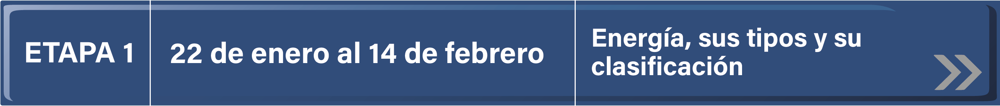
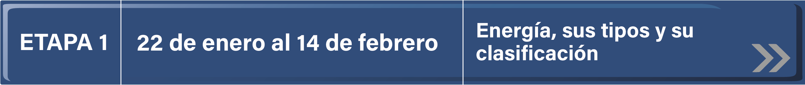

Inicio
El profesor de grupo tendrá participación activa en el proceso de los alumnos observando, analizando, reflexionando, tomando notas, como facilitador y guía de sus alumnos.
Este trabajo inicia desde el momento en que el profesor motiva a los alumnos para participar en el proyecto.
- Observará la participación de los alumnos en el desarrollo de las actividades.
- Tomará nota de lo que observe.
- Analizará y reflexionará sobre lo que escribió durante el transcurso de las actividades en cada etapa del proyecto.
Los alumnos escribirán un ensayo donde expresen lo observado y analizado (observaciones y conclusiones sobre el trabajo realizado con el proyecto colaborativo) que podrán compartir en el foro de la última etapa.
Evaluación.
Criterios:
- Adquirir un mayor grado competencial, superando objetivos y contenidos mínimos programados.
- Participación del alumnado en el aula.
- Originalidad, creatividad y limpieza en los trabajos desarrollados.
- Comportamiento en el aula.
- Expresión oral y escrita.
- Relación con el resto de compañeros.
- Reacciones ante los nuevos contenidos descritos.
Instrumentos:
Los instrumentos de evaluación que se van a utilizar en este proyecto son:
- Actividades.
- Desarrollo de un Modelo Científico de Energía Renovable.
Presentación
Laboratorio de energía renovable
“La energía no se crea ni se destruye… tan solo se transforma”
Introducción
Las fuentes de energía renovable están en todo nuestro alrededor: agua, viento, sol… cada día más personas las utilizan como parte de su vida diaria. Las utilizamos para calentar nuestros hogares en épocas frías, para operar nuestros electrodomésticos, ducharnos con agua caliente, irrigar campos con agua para agricultura, etc. Hay amplio espacio para formarse y crecer como profesionales en carreras en torno a las energías renovables. Este curso es una introducción a los distintos tipos de energías renovables.
Introducción a la Energía Renovable es un curso en línea para aquellos que desean aprender los conceptos básicos de las energías renovables incluyendo donde se encuentra, cómo podemos sacar provecho de ella para el uso en nuestros hogares y cómo puede ayudar a aliviar las presiones sobre el medio ambiente. Con este curso no se convertirá en un experto; pero llegará a conocer la energía renovable en sus diversas formas – que le ayudarán a decidir si la energía solar, eólica u otras tecnologías son las adecuadas para usted.
Sobre este curso
El recurso energético está ligado al desarrollo, bienestar, sustentabilidad e independencia de las sociedades modernas. La utilización y administración adecuada de los diferentes recursos energéticos impactará tanto en el progreso futuro propio como en el poder económico.
Es imperativo conocer a profundidad los pros y contras de las diferentes tecnologías energéticas para minimizar el impacto negativo en el propio entorno al seleccionar, usar, racionalizar y aprovechar las energías empleadas en el diario quehacer.
El participante desarrollará competencias de análisis y juicio crítico ante la selección de un recurso energético, elaborando un discurso consciente y fundamentado donde se considere el entorno y sus recursos.
Actividades
El proyecto Laboratorio de energía renovable consta de cuatro etapas a través de las cuales el alumno podrá reconocer los tipos de energía que existen en su medio ambiente cotidiano, así como las energías renovables que contribuyen a la conservación del medio ambiente.
Se sugieren actividades, lecturas, investigación en documentos, videos y páginas de internet que han sido seleccionadas de acuerdo a las necesidades de los alumnos de secundaria.
Para inscribirse los participantes eligen un nombre que los distinguirá de los demás. Al interior del grupo los docentes organizan en equipos para realizar las actividades que se sugieren en cada etapa, mismas que les permitirán realizar el intercambio con compañeros distantes.
Para iniciar las actividades se sugiere conocer las características del proyecto con el objetivo de comprender la responsabilidad que adquieren para el desarrollo del mismo.
Se incluyen actividades interactivas en las que podrán reforzar el conocimiento adquirido a través de las distintas etapas del proyecto.
En la etapa 1 realizarán una lluvia de ideas para iniciar con el tema de la energía, ¿qué es? y cuáles son los tipos de energía, realizarán un mapa mental y conocerán el funcionamiento de un generador de energía.
En la etapa 2 analizarán las diferentes energías convencionales y su efecto en el medio ambiente como el calentamiento global y la contaminación.
En la siguiente etapa conocerán las energías renovables, elaborarán una encuesta y de manera práctica la generación de biogás.
En la etapa 4 se realiza un proyecto final que consiste en una maqueta donde se exponga la energía renovable.
Podrán intercambiar ideas y comentarios a través de foros de discusión, en el que los alumnos darán a conocer sus reflexiones, hallazgos y aprendizajes convirtiendo el uso de la tecnología en el aula en una herramienta para la investigación, el intercambio y la interacción entre profesores y alumnos.
El desarrollo del proyecto es guiado por el maestro del grupo en coordinación con el responsable tecnológico escolar. Se sugiere que a cada aportación en los foros le anexen los siguientes datos:
- Nombre del equipo
- Nombre de la escuela
- Entidad
- Clave de Centro de Trabajo (CCT)
Además, para que los foros sean fluidos es importante tomar en cuenta los requisitos que se enumeran a continuación:
- Los mensajes deben cumplir con las reglas ortográficas y de redacción revisadas previamente por su profesor.
- Los comentarios y opiniones de participación se harán con estricto apego al respeto como un valor importante para la realización de dichas actividades.
- En caso de que las aportaciones de los equipos de un grupo sean iguales, deberán enviar un solo mensaje en forma grupal, con el objetivo de enriquecer el foro y no saturar.
- Participar tomando en cuenta las preguntas generadoras del foro.
Ubicación curricular
CIENCIAS Y TECNOLOGÍA. Física.
Este Proyecto se ubica curricularmente en los bloques 1 y 2 de la asignatura de Ciencias y Tecnología. Física de segundo grado en Secundaria.
Competencias a desarrollar:
- Analizar las formas en que se manifiesta la energía en diferentes situaciones de la vida diaria y la diversificación en la producción de la energía.
- Reconoce el beneficio y prejuicio en la naturaleza y en la sociedad, relacionado con la obtención y aprovechamiento de la energía.
- • El participante podrá predecir para las tecnologías de producción energética que generen un menor impacto ambiental en la sociedad.
Calendario
 



ETAPA 1. Energía, sus tipos y su clasificación.
Actividad 1.1
Evaluación inicial: Brainstorming: ¿Qué sabes de la energía? (G. A) El profesor realiza las siguientes preguntas para establecer qué conocimiento poseen los alumnos sobre el tema.
- Contesta el siguiente cuestionario sobre el cambio climático: Cambio Climático
- ¿Es necesaria la energía para nuestra sociedad?.
- ¿Por qué es necesaria la energía?.
- ¿Qué tipo de energías conocéis?.
- Nombra algún tipo de energía no renovable.
- Nombra algún tipo de energía renovable.
- ¿Alguno de estos tipos de energía contamina?
- ¿Crees que estas energías afectan al cambio climático?
- ¿Qué cosas afectan al cambio climático?
Material de apoyo
- Energia
- Cambios de Energía
- Energía cinética y energía potencial
- Los Tipos de Energía, sus Fuentes y su Transformación
Actividad 1.2
Realiza un mapa mental sobre Tipos de Energía, la Conversión de la energía entre ellas y los recursos energéticos necesarios para su generación.
Revisa el siguiente video para realizar el mapa en Power Point.
Recurso tecnológico web 2.0
También pueden utilizar la página web.
Lucidspark
Tutorial
Actividad 1.3
Formen parejas y analicen el siguiente video que explica los Tipos de energía
Con base en ello, respondan las siguientes preguntas.
- ¿Qué tipo de energía requiere un ventilador para funcionar?
- ¿La energía con la que funciona el ventilador se puede transformar en otros tipos de energía? Si/ No ¿ En cuáles?
- Participen en el Foro del Proyecto Colaborativo y comenten otros ejemplos en la vida diaria en las que se utilicen energía y cómo se transforma en esos casos.
- ¿Cómo funciona un generador de electricidad?.
Actividad 1.4
Generador eléctrico
- Paso 1. Trabajen en parejas y realicen lo que se indica
- Paso 2. Investiguen en la biblioteca cómo se produce la corriente eléctrica en un generador, haciendo énfasis en el papel del campo magnético de dicho proceso.
- Paso 3. Representen con un diagrama lo investigado y agruguen una descripción breve sobre el funcionamiento del generador.
- Paso 4. Coloquen en la pared de su salón los diagramas que elaboraron para que el resto del grupo los observe; servirán de referencia durante el estudio de este tema
- Paso 5. Hagan comentarios a sus compañeros a fin de destacar sus logros, así como los aspectos que puedan mejorar.
- Guarden sus esquemas en la carpeta de trabajo.
ETAPA 2. Energías convencionales
Actividad 2.1
Videos
Políticas gubernamentales en México.
Actividad 2.2 Disminución del calentamiento global.
- Paso 1.Trabajen en equipo la siguiente actividad.
- Paso 2.Investiguen cuáles son las políticas gubernamentales actuales para combatir el calentamiento global.
- Paso 3.Discutan en grupo, y con ayuda del maestro, sobre las acciones que se pueden tomar en sus casas para reducir el calentamiento global.
- Paso 4.Escriban en su cuaderno qué acciones se pueden realizar en su escuela. Comenten cuáles se llevarían a cabo en el corto plazo y cuáles en el largo plazo.
- Paso 5.Elaboren carteles para promover estas acciones y péguenlos en lugares visibles de la escuela.
Actividad 2.3 Contaminación por generación de energía.
Mesa de Debate…. ¿Qué tipo de energía Contamina más?
Forma equipos y asigna un tipo de energía convencional a cada equipo para defender la producción de energía a través de ese recurso.
Video de un debate

ETAPA 3: Energía Renovable
En esta etapa conoceremos los tipos de energía renovable.
Actividad 3.1
Analizar los siguientes videos:
Energía geotérmica
Energía hidráulica
Energía eólica
Parque eólico
Oaxaca Futuro de proyectos
Energía Solar fotovoltaica
Paruqe Solar
Energía termosolar.
Biomasa
Actividad 3.2
Obtención de biogás
Forma un equipo con tus compañeros y realicen el experimento.
Pregunta inicial.
¿Cómo se genera el biogas a partir de restos de comida?
Hipótesis
Contesten la pregunta inicial a partir de lo que han aprendido en este tema. Por ejemplo, expliquen qué sucederá si los restos de comida se fermentan.
Material.
Deberán conseguir por grupo:
- Una bolsa de plástico grueso.
- Un alfiler.
- Desechos de comida de origen vegetal, como cáscaras de plátano, pepino, aguacate, chayote o calabaza.
- Un poco de excreta de pollo o de otro animal de granja.
- Guantes de plástico o látex.
Procedimiento y resultados.
- Paso 1.Utilicen los guantes para mezclar los desechos de comida con la excreta animal dentro de la bolsa. Es muy importante que protejan sus manos para evitar contaminarlas con microorganismos.
- Paso 2.Cierren bien la bolsa y colóquenla a la intemperie durante tres días.
- Paso 3.Transcurrido el tiempo, utilicen guantes nuevamente para tocar la bolsa.
- Paso 4.Con cuidado, piquen la bolsa con un alfiler y observen qué sucede.
- Paso 5.Abran la bolsa, observen su contenido, perciban su olor y anoten la descripción en una hoja aparte.
Análisis y discusión.
Contesten y argumenten lo siguiente en su hoja:
- ¿Notaron algún cambio en la bolsa o en su contenido? ¿Cuál era su aspecto? Descríbanlo.
- ¿Qué sucedió cuando picaron la bolsa?
- Desechos de comida de origen vegetal, como cáscaras de plátano, pepino, aguacate, chayote o calabaza.
- ¿A qué se debe lo sucedido?
Actividad 3.3
1. En equipos busquen en libros o internet la información solicitada.
2. Se reparten los siguientes temas entre los equipos:
- Energía solar
- Energía eólica
- Energía a partir de biogás
- Energía geotérmica/li>
3. Cada equipo investigará acerca de los siguientes aspectos:
- Eficiencia del tipo de energía
- Requerimientos básicos para producirla.
- Mejores localidades, en México, para producir este tipo de energía.
- Ventajas y desventajas potenciales del uso de ese tipo de energía (daño al medioambiente o a las personas).
4. Con la información que recopilaron, lleven a cabo un intercambio de ideas entre los equipos.
5. Discutan y lleguen a acuerdos acerca de cuál de los tipos de energía es el más apropiado, dados los aspectos que investigan.
6. Indaguen cuál o cuáles son los tipos de energías limpias o renovables que se emplean en su localidad. En caso de no haberlos, pregunten a los adultos de su localidad cuál es la principal forma de producción de electricidad en ese lugar.
7. De manera individual, revisa todos los productos de las actividades realizadas en este tema, tanto los que están en la carpeta de trabajo como en el cuaderno. Con base en eso completa lo siguiente:
- En este tema aprendí que:
- Esto lo sé porque:
- Energía a partir de biogás
- Pienso que mi desempeño en este tipo de actividades es:
- Muy bueno
- Bueno
- Suficiente
- Al principio de este tema no sabía que:
- Considero que mi compañero
- Tiene facilidad para
- Ya que
Actividad 3.4
En equipos formular un cuestionario conforme al siguiente tutorial.
Tutorial Quizz
Página interactiva…
Fundación Naturgy
ETAPA 4. Proyecto Final
Actividad 4.1
Maqueta de mi escuela
- Trabajen en equipo y construyan una maqueta donde se exponga la energía renovable.
- Utilicen material de reuso, como palitos de madera, papel, cartón u otro que tengan a su alcance.
- Comparen su maqueta con la de los demás equipos y respondan en su cuaderno lo siguiente:
- ¿Qué procedimiento siguieron para planear la construcción de la maqueta?
Describan:
- ¿Qué semejanzas o diferencias hay entre la maqueta de su equipo y la de los demás?
- ¿Todas las maquetas representan la energía renovable? ¿Qué diferencias tienen? ¿Por qué?
- Expliquen algunos de los usos que le pueden dar a su maqueta dentro de la escuela y fuera de ella.
- Escriban una conclusión en la que definan, qué es un modelo y cuál es su utilidad.
Actividades extras a desarrollar
Pila orgánica
Estufa solar
Generador Eólico
Descargar Actividades
Dar clic en la imagen para descargar el archivo
Foros
Foro I
Favor de ingresar al sigueinte enlace: Energía, sus tipos y su clasificación. Comparte en el foro tu experiencia en el desarrollo del contenido del Módulo 1. Energía, sus tipos y su clasificación.
Foro II
Favor de ingresar al sigueinte enlace: Comparte tu experiencia en el Debate de cual energía convencional es mejor.
Foro III
Favor de ingresar al sigueinte enlace: Participa en el foro del Módulo 3: Energía Renovable y comenta por que son importantes en la actualidad este tipo de generación de energía.
Bienvenido

Laboratorio de Energías Renovables
Proyectos colaborativos
¡Atrévete a guiar a tus alumnos en esta nueva aventura!
Aprenderán sobre:
La energía eólica consiste en convertir la energía que produce el movimiento de las palas de un aerogenerador impulsadas por el viento en energía eléctrica.
La energía solar es la producida por la luz –energía fotovoltaica- o el calor del sol –termosolar- para la generación de electricidad o la producción de calor. Inagotable y renovable, pues procede del sol, se obtiene por medio de paneles y espejos.
Energía hidráulicaes aquella que aprovecha el movimiento del agua para generar energía. Su obtención se debe al aprovechamiento de la energía cinética y potencial de los saltos de agua o corrientes.